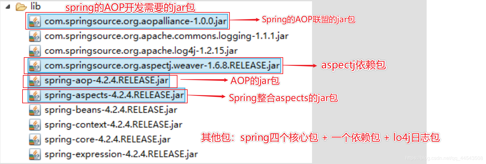

原文连接:https://www.cnblogs.com/yichunguo/p/11939547.html
目录
- 1、 AOP 的概述
- 2、 Spring 基于AspectJ 进行 AOP 的开发入门（XML 的方式）：
- 3、Spring 基于AspectJ 进行 AOP 的开发入门（注解的方式）：
- 4、Spring的注解的AOP的通知类型
- 5、Spring的注解的AOP的切入点的配置
@
在Spring框架学习一中主要讲的是一些Spring的概述、Spring工厂、Spring属性注入以及IOC入门，其中最重要的是IOC，上一篇中IOC大概讲的小结一下：
然后呢这一篇中主要讲一下Spring中除了IOC之外的另一个重要的核心：AOP，在Spring中IOC也好，AOP也好，都必须会二者的XML开发以及注解开发，也就是说IOC和AOP的XML开发以及注解开发都要掌握
1、 AOP 的概述
从专业的角度来讲（千万不要问我有多专业，度娘是我表锅不对是表嫂QAQ）：
在软件业，AOP为Aspect Oriented Programming的缩写，意为：面向切面编程，通过预编译方式和运行期动态代理实现程序功能的统一维护的一种技术。AOP是OOP的延续，是软件开发中的一个热点，也是Spring框架中的一个重要内容，是函数式编程的一种衍生范型。利用AOP可以对业务逻辑的各个部分进行隔离，从而使得业务逻辑各部分之间的耦合度降低，提高程序的可重用性，同时提高了开发的效率。
从通俗易懂且不失风趣的角度来讲：（来自武哥文章谈谈Spring中的IOC和AOP概念）
面向切面编程的目标就是分离关注点。什么是关注点呢？就是你要做的事，就是关注点。假如你是个公子哥，没啥人生目标，天天就是衣来伸手，饭来张口，整天只知道玩一件事！那么，每天你一睁眼，就光想着吃完饭就去玩（你必须要做的事），但是在玩之前，你还需要穿衣服、穿鞋子、叠好被子、做饭等等等等事情，这些事情就是你的关注点，但是你只想吃饭然后玩，那么怎么办呢？这些事情通通交给别人去干。在你走到饭桌之前，有一个专门的仆人A帮你穿衣服，仆人B帮你穿鞋子，仆人C帮你叠好被子，仆人C帮你做饭，然后你就开始吃饭、去玩（这就是你一天的正事），你干完你的正事之后，回来，然后一系列仆人又开始帮你干这个干那个，然后一天就结束了！
AOP的好处就是你只需要干你的正事，其它事情别人帮你干。也许有一天，你想裸奔，不想穿衣服，那么你把仆人A解雇就是了！也许有一天，出门之前你还想带点钱，那么你再雇一个仆人D专门帮你干取钱的活！这就是AOP。每个人各司其职，灵活组合，达到一种可配置的、可插拔的程序结构。
从Spring的角度看，AOP最大的用途就在于提供了事务管理的能力。事务管理就是一个关注点，你的正事就是去访问数据库，而你不想管事务（太烦），所以，Spring在你访问数据库之前，自动帮你开启事务，当你访问数据库结束之后，自动帮你提交/回滚事务！
1、1 为什么学习 AOP
Spring 的 AOP 的由来:AOP 最早由 AOP 联盟的组织提出的,制定了一套规范.Spring 将 AOP 思想引入到框架中,必须遵守 AOP 联盟的规范.
Aop解决实际开发中的一些问题:
- AOP 解决 OOP 中遇到的一些问题.是 OOP 的延续和扩展.
对程序进行增强:不修改源码的情况下：
- AOP 可以进行权限校验,日志记录,性能监控,事务控制.
1、2 AOP底层实现: 代理机制（了解）
Spring 的 AOP 的底层用到两种代理机制：
- JDK 的动态代理 :针对实现了接口的类产生代理.
- Cglib 的动态代理 :针对没有实现接口的类产生代理. 应用的是底层的字节码增强的技术 生成当前类的子类对象
spring底层会完成自动代理，实现了接口的类默认使用的是JDK 的动态代理，相反的，没有实现接口的类默认使用的是Cglib 的动态代理 ，底层代码可以不懂但这个概念一定要知道，不然会被鄙视的，O(∩_∩)O哈哈~，下面是底层代码，有兴趣的可以了解了解。
JDK 动态代理增强一个类中方法:
public class MyJDKProxy implements InvocationHandler {
private UserDao userDao;
public MyJDKProxy(UserDao userDao) {
this.userDao = userDao;
}
// 编写工具方法：生成代理：
public UserDao createProxy() {
UserDao userDaoProxy = (UserDao) Proxy.newProxyInstance(userDao
.getClass().getClassLoader(), userDao.getClass()
.getInterfaces(), this);
return userDaoProxy;
}
@Override
public Object invoke(Object proxy, Method method, Object[] args)
throws Throwable {
if ("save".equals(method.getName())) {
System.out.println("权限校验================");
}
return method.invoke(userDao, args);
}
}Cglib 动态代理增强一个类中的方法:
public class MyCglibProxy implements MethodInterceptor {
private CustomerDao customerDao;
public MyCglibProxy(CustomerDao customerDao) {
this.customerDao = customerDao;
}
// 生成代理的方法:
public CustomerDao createProxy() {
// 创建 Cglib 的核心类:
Enhancer enhancer = new Enhancer();
// 设置父类:
enhancer.setSuperclass(CustomerDao.class);
// 设置回调:
enhancer.setCallback(this);
// 生成代理：
CustomerDao customerDaoProxy = (CustomerDao) enhancer.create();
return customerDaoProxy;
}
@Override
public Object intercept(Object proxy, Method method, Object[] args,
MethodProxy methodProxy) throws Throwable {
if ("delete".equals(method.getName())) {
Object obj = methodProxy.invokeSuper(proxy, args);
System.out.println("日志记录================");
return obj;
}
return methodProxy.invokeSuper(proxy, args);
}
}2、 Spring 基于AspectJ 进行 AOP 的开发入门（XML 的方式）：
首先，Spring为什么不直接进行Spring的AOP开发呢，而要基于Aspectj呢，是因为，Spring自己的AOP开发实现方式（传统的AOP开发）繁琐且复杂，效率极低，于是传统的AOP开发基本上弃用了，相反Aspectj的AOP开发效率高，所以AOP开发一般是Spring 的基于 AspectJ 的 AOP 开发。
2.1 AOP 的开发中的相关术语:
Aop是一种非常高深的思想，当然会有非常专业的相关术语了（这弯绕的，你打几分？）
从专业的角度角度概述定义(相对来说比较枯燥不易理解)：
Joinpoint(连接点):所谓连接点是指那些被拦截到的点。在 spring 中,这些点指的是方法,因为 spring 只
支持方法类型的连接点.
Pointcut(切入点):所谓切入点是指我们要对哪些 Joinpoint 进行拦截的定义.
Advice(通知/增强):所谓通知是指拦截到 Joinpoint 之后所要做的事情就是通知.通知分为前置通知,后置
通知,异常通知,最终通知,环绕通知(切面要完成的功能)
Introduction(引介):引介是一种特殊的通知在不修改类代码的前提下, Introduction 可以在运行期为类
动态地添加一些方法或 Field.
Target(目标对象):代理的目标对象
Weaving(织入):是指把增强应用到目标对象来创建新的代理对象的过程.
spring 采用动态代理织入，而 AspectJ 采用编译期织入和类装在期织入
Proxy（代理）:一个类被 AOP 织入增强后，就产生一个结果代理类
Aspect(切面): 是切入点和通知（引介）的结合
基于专业的角度实例分析(相对来说易理解，什么？画质差？咳咳...1080p蓝光画质...哎哎哎..大哥..别打...别打...别打脸)：
2.2引入相应的 jar 包
引入jar包：基础六个jar包、AOP联盟jar包、spring的AOPjar包、aspectJ的jar包、spring整合aspectj的jar包
spring 的传统 AOP 的开发的包：
spring-aop-4.2.4.RELEASE.jar
com.springsource.org.aopalliance-1.0.0.jaraspectJ 的开发包:
com.springsource.org.aspectj.weaver-1.6.8.RELEASE.jar
spring-aspects-4.2.4.RELEASE.jar
2.3 引入 Spring 的配置文件
引入 AOP 约束:
<beans xmlns="http://www.springframework.org/schema/beans"
xmlns:xsi="http://www.w3.org/2001/XMLSchema-instance"
xmlns:aop="http://www.springframework.org/schema/aop" xsi:schemaLocation="
http://www.springframework.org/schema/beans
http://www.springframework.org/schema/beans/spring-beans.xsd
http://www.springframework.org/schema/aop
http://www.springframework.org/schema/aop/spring-aop.xsd">
</beans>2.4 编写目标类
创建接口和类:
public interface OrderDao {
public void save();
public void update();
public void delete();
public void find();
}
public class OrderDaoImpl implements OrderDao {
@Override
public void save() {
System.out.println("保存订单...");
}
@Override
public void update() {
System.out.println("修改订单...");
}
@Override
public void delete() {
System.out.println("删除订单...");
}
@Override
public void find() {
System.out.println("查询订单...");
}
}2.5 目标类的XML配置
<!-- 目标类配置:被增强的类 -->
<bean id="orderDao" class="com.gx.spring.demo3.OrderDaoImpl"></bean>2.6 整合 Junit 单元测试
前提：引入 spring-test.jar 测试的jar包，整合 Junit 单元测试之后就不需要每次都重复注册工厂，只要固定格式在测试类上写两个注解，需要的属性直接注入，之后只关心自己的测试类即可
//固定注解写法（前提：引入 spring-test.jar 测试的jar包）
@RunWith(SpringJUnit4ClassRunner.class)
@ContextConfiguration("classpath:applicationContext.xml")
public class SpringDemo3 {
@Resource(name = "orderDao") //需要的属性直接注入（前提：引入 spring-test.jar 测试的jar包）
private OrderDao orderDao;
@Test
public void demo1() {
orderDao.save();
orderDao.update();
orderDao.delete();
orderDao.find();
}
}运行demo出现如下效果：
2.7 通知类型
到这里，就需要需要对通知类型了解一下（前三者常用）：
前置通知 ：在目标方法执行之前执行.
后置通知 ：在目标方法执行之后执行
如果要获得后置通知中的返回值，必须注意的是：
环绕通知 ：在目标方法执行前和执行后执行
异常抛出通知：在目标方法执行出现 异常的时候 执行
最终通知 ：无论目标方法是否出现异常 最终通知都会 执行.
通知类型XML配置：
2.8 切入点表达式
execution(表达式)
表达式 : [方法访问修饰符] 方法返回值 包名.类名.方法名(方法的参数)
切入点表达式所以就是execution( [方法访问修饰符] 方法返回值 包名.类名.方法名(方法的参数))
其中 [ ] 中的方法访问修饰符可有可无
切入点表达式各类型例子：
public * com.gx.spring.dao. * .*(..)
com.gx.spring.dao.*.*(..)
com.gx.spring.dao.UserDao+.*(..)
com.gx.spring.dao..*.*(..)2.9 编写一个切面类
好了，了解了通知类型以及切入点表达式之后就可以来 编写一个切面类玩起来了QAQ
public class MyAspectXml {
// 前置增强
public void before(){
System.out.println("前置增强===========");
} }2.10 配置完成增强
<!-- 配置切面类 -->
<bean id="myAspectXml" class="com.gx.spring.demo3.MyAspectXml"></bean>
<!-- 进行 aop 的配置 -->
<aop:config>
<!-- 配置切入点表达式:哪些类的哪些方法需要进行增强 -->
<aop:pointcut expression="execution(* com.gx.spring.demo3.OrderDao.save(..))" id="pointcut1"/>
<!-- 配置切面 -->
<aop:aspect ref="myAspectXml">
<aop:before method="before" pointcut-ref="pointcut1"/>
</aop:aspect>
</aop:config>
需要注意的点我都规划出来了（不用夸我，我知道我长得帅QnQ）
2.11 其他的增强的配置：
<!-- 配置切面类 -->
<bean id="myAspectXml" class="com.gx.demo3.MyAspectXml"></bean>
<!-- 进行 aop 的配置 -->
<aop:config>
<!-- 配置切入点表达式:哪些类的哪些方法需要进行增强 -->
<aop:pointcut expression="execution(* com.gx.spring.demo3.*Dao.save(..))" id="pointcut1"/>
<aop:pointcut expression="execution(* com.gx.spring.demo3.*Dao.delete(..))" id="pointcut2"/>
<aop:pointcut expression="execution(* com.gx.spring.demo3.*Dao.update(..))" id="pointcut3"/>
<aop:pointcut expression="execution(* com.gx.spring.demo3.*Dao.find(..))" id="pointcut4"/>
<!-- 配置切面 -->
<aop:aspect ref="myAspectXml">
<aop:before method="before" pointcut-ref="pointcut1"/>
<aop:after-returning method="afterReturing"pointcut-ref="pointcut2"/>
<aop:around method="around" pointcut-ref="pointcut3"/>
<aop:after-throwing method="afterThrowing" pointcut-ref="pointcut4"/>
<aop:after method="after" pointcut-ref="pointcut4"/>
</aop:aspect>
</aop:config>3、Spring 基于AspectJ 进行 AOP 的开发入门（注解的方式）：
3.1创建项目，引入jar包
引入的jar包如下：
3.2引入配置文件
3.3编写目标类并配置
编写目标类：
package com.gx.spring.demo1;
public class OrderDao {
public void save(){
System.out.println("保存订单...");
}
public void update(){
System.out.println("修改订单...");
}
public String delete(){
System.out.println("删除订单...");
return "鄢寒";
}
public void find(){
System.out.println("查询订单...");
}
}XML配置：
<!-- 配置目标类 -->
<bean id="orderDao" class="com.gx.spring.demo1.OrderDao">
</bean>3.4编写切面类并配置
编写切面类
package com.gx.spring.demo1;
import org.aspectj.lang.ProceedingJoinPoint;
import org.aspectj.lang.annotation.After;
import org.aspectj.lang.annotation.AfterReturning;
import org.aspectj.lang.annotation.AfterThrowing;
import org.aspectj.lang.annotation.Around;
import org.aspectj.lang.annotation.Aspect;
import org.aspectj.lang.annotation.Before;
import org.aspectj.lang.annotation.Pointcut;
/**
* 切面类：注解的切面类
* @author jt
*/
public class MyAspectAnno {
public void before(){
System.out.println("前置增强===========");
}
}XML配置：
<!-- 配置切面类 -->
<bean id="myAspect" class="com.gx.spring.demo1.MyAspectAnno">
</bean>3.5使用注解的AOP对象目标类进行增强
1、在配置文件中打开注解的AOP开发
<!-- 在配置文件中开启注解的AOP的开发 -->
<aop:aspectj-autoproxy/>2、在切面类上使用注解
在类上使用@Aspect注解代表这是一个切面类
在方法上注入属性@Before（execution表达式）代表前置增强
@Aspect
public class MyAspectAnno {
@Before(value="execution(* com.gx.spring.demo1.OrderDao.save(..))")
public void before(){
System.out.println("前置增强===========");
}
}3.6编写测试类
package com.gx.spring.demo1;
import javax.annotation.Resource;
import org.junit.Test;
import org.junit.runner.RunWith;
import org.springframework.test.context.ContextConfiguration;
import org.springframework.test.context.junit4.SpringJUnit4ClassRunner;
/**
* Spring的AOP的注解开发
*
*/
@RunWith(SpringJUnit4ClassRunner.class)
@ContextConfiguration("classpath:applicationContext.xml")
public class SpringDemo1 {
@Resource(name="orderDao")
private static OrderDao orderDao;
public static void main(String[] args) {
orderDao.save();
orderDao.update();
orderDao.delete();
orderDao.find();
}
}
测试结果：
4、Spring的注解的AOP的通知类型
4.1@Before ：前置通知
@Aspect
public class MyAspectAnno {
@Before(value="execution(* com.gx.spring.demo1.OrderDao.save(..))")
public void before(){
System.out.println("前置增强===========");
}
}4.2@AfterReturning ：后置通知
后置通知可以获取方法返回值
// 后置通知:
@AfterReturning(value="execution(* com.gx.spring.demo1.OrderDao.save(..))")
public void afterReturning(Object result){
System.out.println("后置增强==========="+result);
}借用一下XML方式的图，意思意思啦，意思还是那个意思QnQ
4.3@Around ：环绕通知
// 环绕通知:
@Around(value="execution(* com.gx.spring.demo1.OrderDao.save(..))")
public Object around(ProceedingJoinPoint joinPoint) throws Throwable{
System.out.println("环绕前增强==========");
Object obj = joinPoint.proceed();
System.out.println("环绕后增强==========");
return obj;
}4.4@AfterThrowing ：异常抛出通知
测试前记得制造出个异常qnq
// 异常抛出通知:
@AfterThrowing(value="execution(* com.gx.spring.demo1.OrderDao.save(..))" throwing="e")
public void afterThrowing(Throwable e){
System.out.println("异常抛出增强========="+e.getMessage());
}4.5@After ：最终通知
// 最终通知
@After(value="execution(* com.gx.spring.demo1.OrderDao.save(..))")
public void after(){
System.out.println("最终增强============");
}5、Spring的注解的AOP的切入点的配置
首先，我们发现在Spring 基于AspectJ 进行 AOP 的开发入门（注解的方式）的过程中如果方法过多，通知过多并且作用于一个方法，需求一改变就需要更改相应的源代码，为了更好的维护，于是有了AOP的切入点的配置，AOP的切入点的配置能很好地决绝改问题！只需要管理AOP的切入点的配置即可！
具体代码如下：
package com.gx.spring.demo1;
import org.aspectj.lang.ProceedingJoinPoint;
import org.aspectj.lang.annotation.After;
import org.aspectj.lang.annotation.AfterReturning;
import org.aspectj.lang.annotation.AfterThrowing;
import org.aspectj.lang.annotation.Around;
import org.aspectj.lang.annotation.Aspect;
import org.aspectj.lang.annotation.Before;
import org.aspectj.lang.annotation.Pointcut;
/**
* 切面类：注解的切面类
* @author jt
*/
@Aspect
public class MyAspectAnno {
// 前置通知:
@Before(value="MyAspectAnno.pointcut2()")
public void before(){
System.out.println("前置增强===========");
}
// 后置通知:
@AfterReturning(value="MyAspectAnno.pointcut4()",returning="result")
public void afterReturning(Object result){
System.out.println("后置增强==========="+result);
}
// 环绕通知:
@Around(value="MyAspectAnno.pointcut3()")
public Object around(ProceedingJoinPoint joinPoint) throws Throwable{
System.out.println("环绕前增强==========");
Object obj = joinPoint.proceed();
System.out.println("环绕后增强==========");
return obj;
}
// 异常抛出通知:
@AfterThrowing(value="MyAspectAnno.pointcut1()",throwing="e")
public void afterThrowing(Throwable e){
System.out.println("异常抛出增强========="+e.getMessage());
}
// 最终通知
@After(value="MyAspectAnno.pointcut1()")
public void after(){
System.out.println("最终增强============");
}
// 切入点注解：
@Pointcut(value="execution(* com.gx.spring.demo1.OrderDao.find(..))")
private void pointcut1(){}
@Pointcut(value="execution(* com.gx.spring.demo1.OrderDao.save(..))")
private void pointcut2(){}
@Pointcut(value="execution(* com.gx.spring.demo1.OrderDao.update(..))")
private void pointcut3(){}
@Pointcut(value="execution(* com.gx.spring.demo1.OrderDao.delete(..))")
private void pointcut4(){}
}
如果本文对你有一点点帮助，那么请点个赞呗，谢谢~
最后，若有不足或者不正之处，欢迎指正批评，感激不尽！如果有疑问欢迎留言，绝对第一时间回复！
欢迎各位关注我的公众号，一起探讨技术，向往技术，追求技术，说好了来了就是盆友喔...